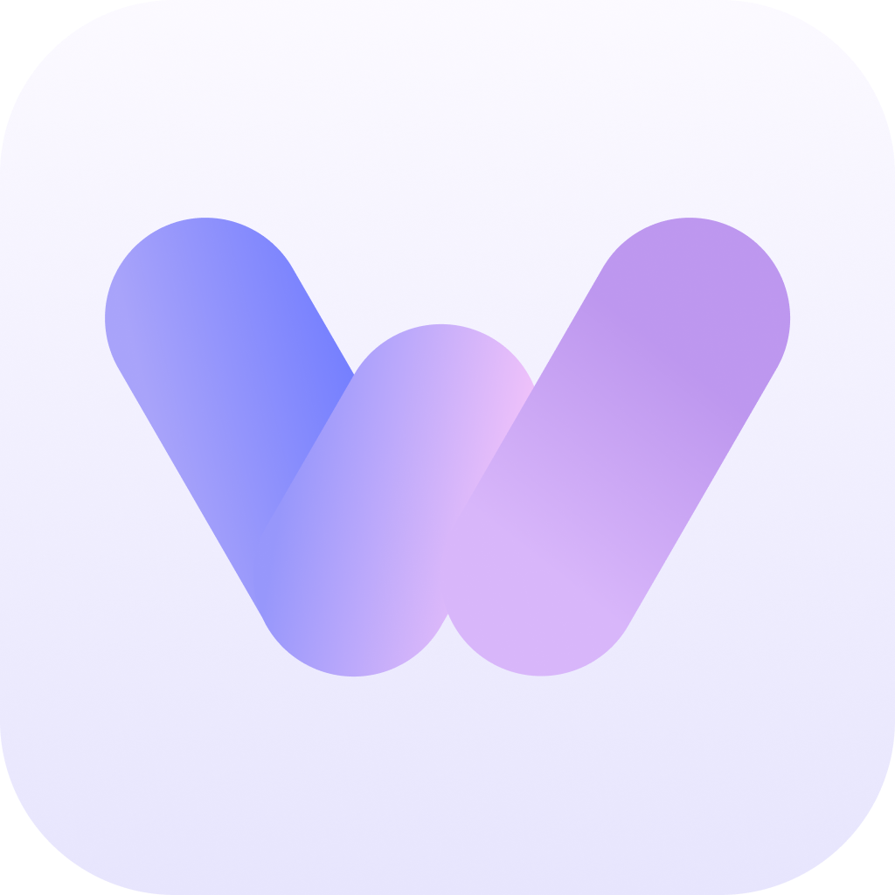
AI Writing Workspace
Wivlo
必要な情報を探しながら、
文書を完成させる。
ノートや外部サービスの情報をEditorの文脈として使い、AIとの共同編集と委任を一つの作業空間で行うプロダクトです。
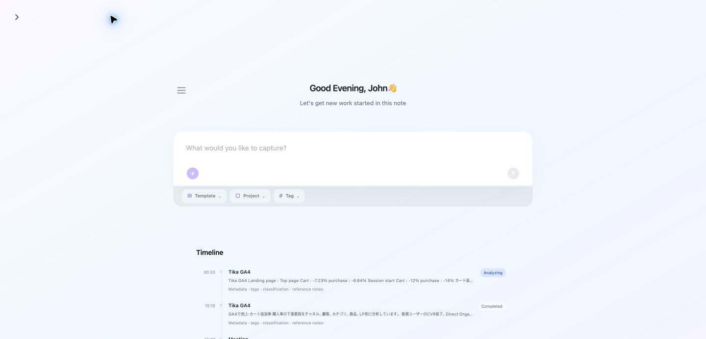
01 / Overview
ノートを増やすのではなく、
既存の知識から成果物を作る。
企画書、リサーチ、会議資料、ブログなどを作るとき、必要な情報を探す作業と書く作業が分断されます。WivloではEditorを中心に、ReferenceとAI Agentを同じ作業フローへ統合しました。
02 / Problem
書く前に、過去の情報を
探し直していた。
保存した場所やタイトルを忘れるだけでなく、その記録が存在したこと自体も忘れます。結果として、同じ内容をもう一度調べ、似た文書を繰り返し作っていました。
どのサービス、どのプロジェクト、どのノートに保存したかを先に思い出す必要がある。
従来のキーワード検索では、過去に使った表現を覚えていないと候補を絞りにくい。
過去の成果物を見つけられず、調査や構成から似た作業を繰り返す。
回答を得ても、根拠の確認と文書への反映は別の画面と操作になる。
03 / Research & Insight
比較したのは機能数ではなく、
再利用までに残る作業。
記録、接続、共同編集、AI検索にはそれぞれ強いツールがあります。一方で、複数の情報を根拠として新しい文書へ変える工程は、ユーザー側に残っていました。
Google Play
5 services
Mobile · AI trust
pattern synthesis
全レビューの頻度を示す定量分析ではなく、Wivloの利用文脈に関係する投稿を抽出し、書く・探す・再利用する場面の摩擦を整理しました。
サービス別のレビュー根拠を見るNotion / Obsidian / Apple Notes / Google Docs / Mem
STRUCTURE / MOBILE
Notion
評価Page、Database、Customizationを一つのWorkspaceにまとめられる。
摩擦Page構造の学習と、MobileでのFormatting・編集機能の差が書き始める前の判断を増やす。
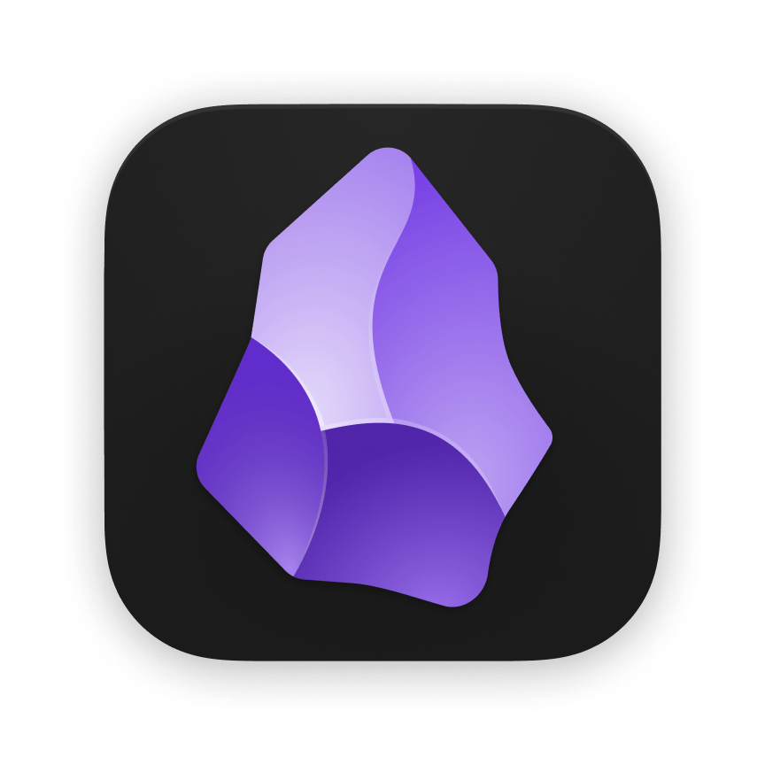
LINKING / LEARNING
Obsidian
評価Local MarkdownとBacklinkにより、データ所有権と情報の接続を保てる。
摩擦Link、Tag、Plugin、同期方法を理解して維持する必要があり、MobileではNavigationとExportの負担が大きい。
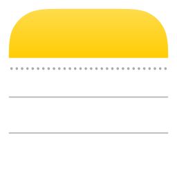
CAPTURE / RECALL
Apple Notes
評価日常の記録、共有、Device同期をすぐ始められる。
摩擦長いNoteと同期時の停止が報告され、蓄積後の再利用には検索と読み直しが残る。
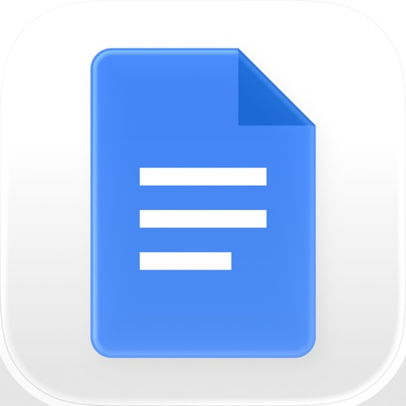
OUTPUT / PLATFORM
Google Docs
評価共同編集とOffline利用を一つの文書上で行える。
摩擦Mobileの機能差や編集Modeの問題があり、過去のSource探索は文書の外に残る。
AI SEARCH / TRUST
Mem
評価手動整理を減らし、曖昧な記憶からNoteを探せる。
摩擦選択中とは別のNoteをAIが編集したという報告があり、対象と変更の曖昧さが信頼を損なう。
Cross-service synthesis共通して残っていたのは、
共通して残っていたのは、
保存後にユーザーが行う作業。
構造、Tag、Pluginを決める。
存在、場所、表現を思い出す。
複数文書から背景を再構成する。
DesktopとMobileの差を埋める。
AIの対象、根拠、変更を確認する。
Remember→Search→Open→Compare→Explain context→Copy→Verify
ボトルネックは保存ではなく、既存知識を成果物へ変える前処理だった。
Official US App Store / Google Play reviews · Accessed 2026.08.27
04 / Product Strategy
Note Appから、
Writing Workspaceへ。
情報の保存量や接続数を価値にせず、ユーザーが最終的に完成させたい文書を中心に製品の範囲を決め直しました。
記録と自動整理が中心。既存ノートアプリとの差が機能単位に留まる。
検索と再利用へ拡張。ただし、成果物を作る場所がまだ曖昧だった。
Editorを中心に、Source、AI、Reviewを一つの作業として設計。
Editor first
検索やChatではなく、文書を完成させる画面をプロダクトの中心に置く。
Sources beside writing
必要な原文を探し、Previewし、引用する操作をEditorの隣に置く。
AI proposes, user decides
AIは候補と作業結果を示し、適用と最終判断はユーザーに残す。
05 / Information Architecture
Editorを中心に、
情報とAIを配置する。
Notes、Collections、Tagsは文脈を作り、SearchとReferenceは必要な情報へ戻る経路を作ります。AI ChatとAI Actionは別の目的地ではなく、Editorで文書を完成させるための支援として配置しました。
Global navigation
HomeCollectionsSearchAI Chat
Organize & retrieve
→
NotesDocument
CollectionsIntentional scope
TagsCross-topic context
Primary workspaceEditorWrite · Review · Continue
→
@ Reference/ AI ActionBranch · Link
Document outcomePreview sourceInsert / QuoteReview changeFinal document
Note is the source
AIの会話ではなく、編集可能なNoteを情報と成果物の基本単位にする。
Collection sets intent
Projectや目的ごとに参照範囲を作り、関連するNoteを同じ作業文脈で扱う。
Reference and Branch differ
根拠として参照するLinkと、選択した文章から派生するBranchを分けて保存する。
06 / Core Experience
Co-writeするときも、
Delegateするときも同じ文脈を使う。
短い修正はEditor内で共同編集し、調査や長い初稿はAgentへ委任します。二つのモードがCurrent document、Project、外部Sourceを共有するように設計しました。
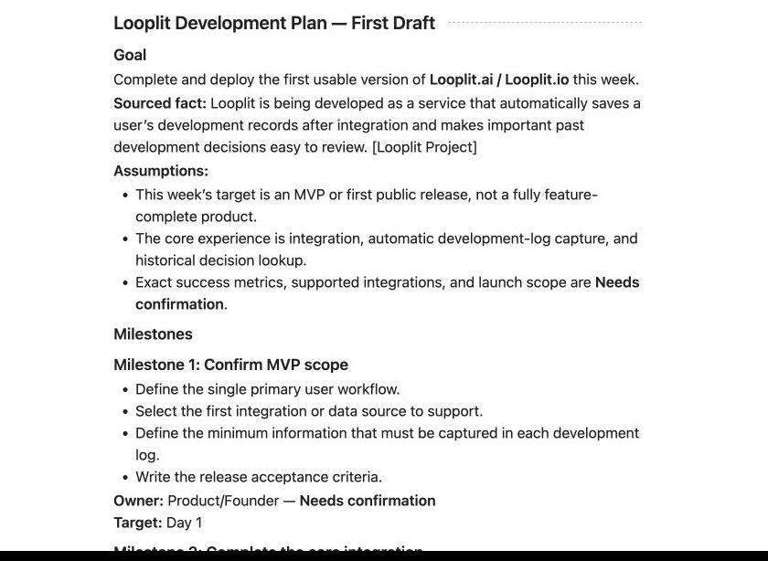
Product brief@ Reference
Notion、Slack、Drive、Wivlo内の記録を検索し、Previewした内容だけを挿入・引用する。
- Understanding
- Finding context
- Drafting
- Checking claims
Review ready3 sections revised
7 sources · +428 words
調査、初稿、根拠確認を別のWriting Runとして処理し、変更理由とSourceを確認してから採用する。
Writing context
Wivlo
Notion
Slack
Drive
- 01
文脈を準備する
- Create project
- Connect sources
- 02
根拠と一緒に書く
- Start writing
- Preview / Insert
- Delegate
- 03
確認して仕上げる
- Review changes
- Final document
07 / AI Interaction Design
AIが動く条件と、
人が判断する境界を設計する。
AI機能を一つのボタンとして扱わず、Intentの理解、Context探索、Sourceの順位付け、生成、引用、Reviewまでを連続したInteractionとして定義しました。
関連候補の探索、初稿、変更案、Source候補、作業進行。
参照範囲、適用する変更、曖昧な判断、最終表現、公開。
原文を自動上書きせず、変更内容と根拠をReview可能な状態にする。
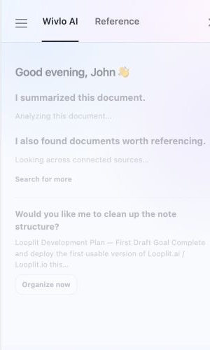
IN PRODUCT文書とAI Contextを同時に確認できる状態を保つ。
Side Panelで指示、生成した提案、関連記録を確認しながら、Editorをそのまま使い続けられる構成にしました。
離脱後の復帰 Writing Runは作業段階を記録し、完了後はSummary、変更量、Reference数を表示します。ユーザーは会話を最初から読み直さず、Reviewから再開できます。
08 / Key Interfaces
機能一覧ではなく、
判断が起きる画面だけを残す。
DesktopではEditorとSourceの比較、Mobileでは記録と検索を優先しました。同じデータを使いながら、作業環境に合わせて操作密度を変えています。
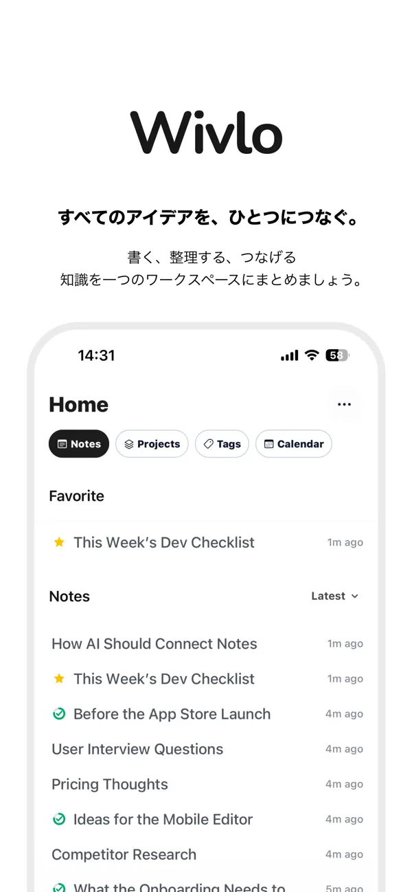
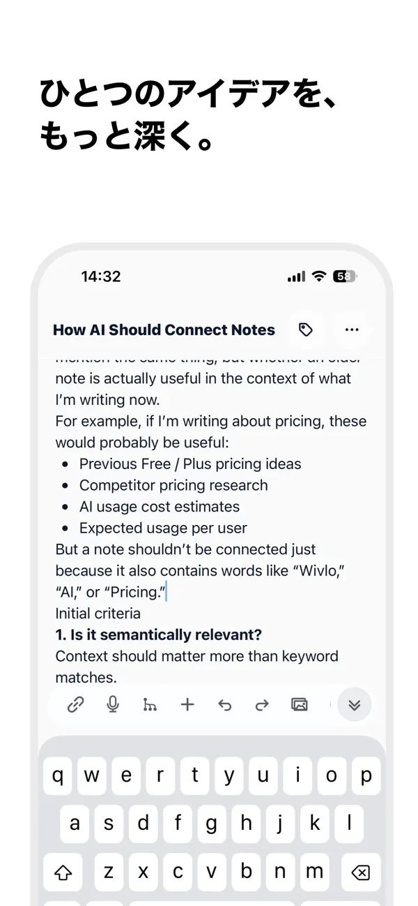
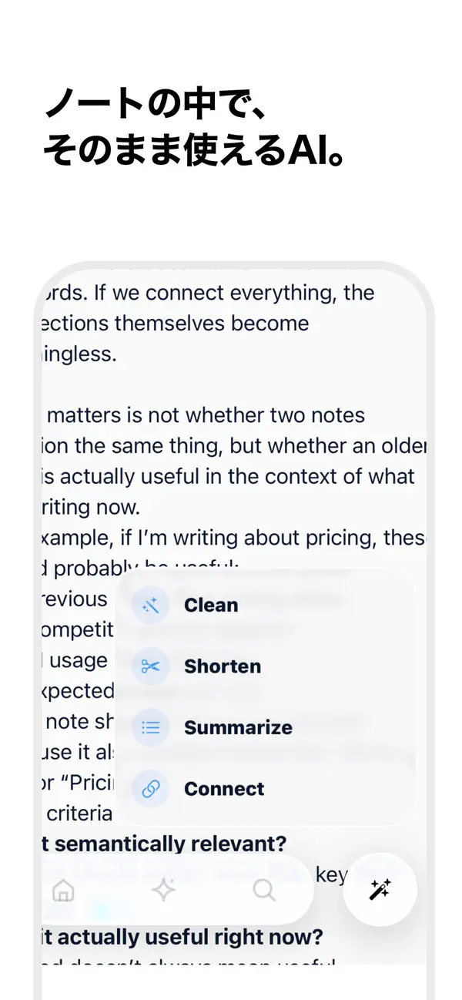
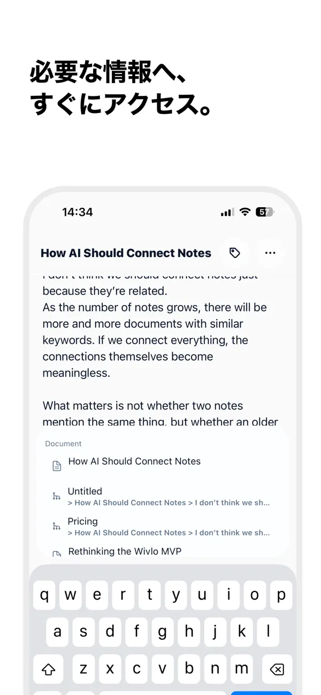
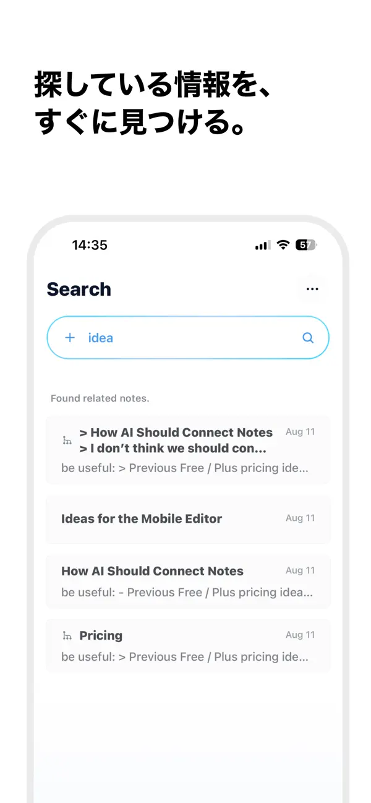
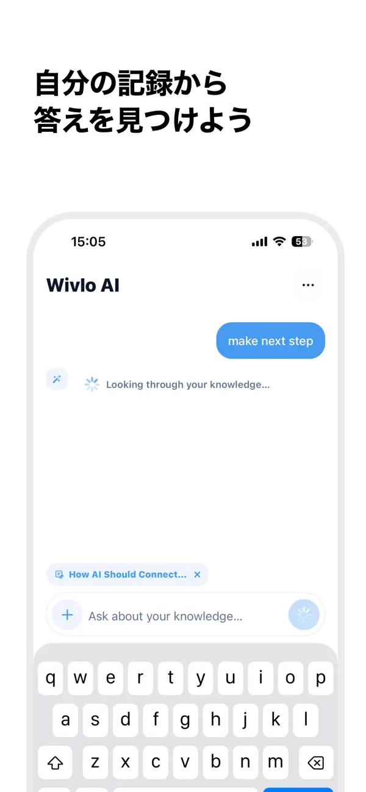
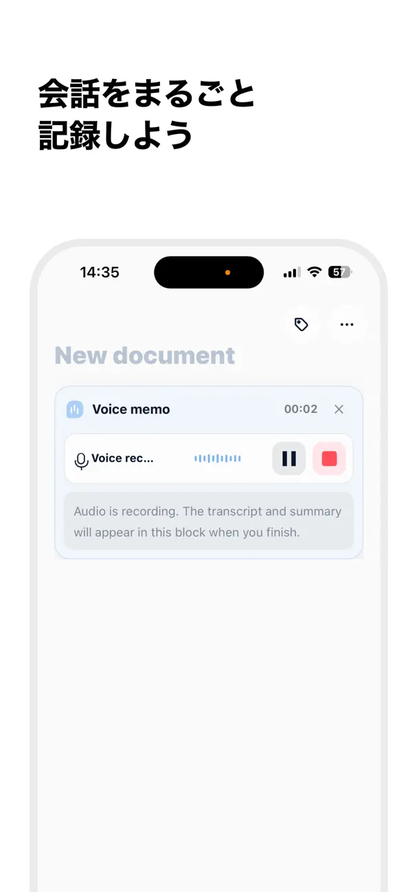
09 / Design System
文書を読む静けさと、
操作の一貫性を両立する。
画面を装飾するためではなく、長い文書を読み書きしながら現在の状態と次の操作を判断できるようにToken、Component、Web / Mobile patternを定義しました。
TextSurfaceAccentDangerFocus
Reference
Dense, document-first
Sidebar、Header、Hover、Keyboardを使い、EditorとSourceを同時に比較できる情報密度を保つ。
Thumb-first editing
Home、Collections、Searchと右端のNew Noteを分け、入力中はKeyboard toolbarへ編集操作を集約する。
Interaction rule44pt touch target · Visible focus · Light / Dark mode · Reduce transparency · Reduced motion
10 / Design Decisions
AIの存在感より、
執筆の主導権を優先した。
AIを目立たせるほど価値が伝わるとは限りません。書く、根拠を確かめる、変更を採用するという判断がユーザー側に残るようにInteractionを調整しました。
Instead of
→AI Chatを主画面にする
DecisionEditorを中心に、AIをSide Panelへ置く
Instead of
→生成結果で原文を置き換える
Decision変更理由とSourceを確認して適用する
Instead of
→すべての接続を同じLinkにする
Decision派生するBranchと参照するLinkを分ける
11 / Designer to Builder
設計判断を、動く製品まで
自分でつなげた。
1人でProduct Strategy、UX/UI、AIの実行条件、データ構造、Web/iOS実装、QA、配信を担当しました。開発は技術の展示ではなく、Interactionの仮説を実際に検証する手段として扱いました。
Frame→Design→Prototype→Build→QA→Release↺
Next.jsReactExpoSupabaseOpenAIVercelApp StoreCodex-assisted development
12 / Post-launch evidence · November 2026
登録の先で、
何が使われていたのか。
GA4の画面・操作イベントとSupabaseの保存記録を照合し、初期ユーザーの利用を分析しました。機能追加の前に、初回作成と再利用のどこを検証すべきかを整理しました。
分析時点：2026年11月7日 16:10 JST。DBは開発者本人1アカウントを除く17アカウントの累積記録。GA4は10月10日〜11月6日の28日間。両者は異なる母集団です。
ノートを保有するアカウント
直近の新規登録でノートを残したアカウント
別日にノートを再閲覧したアカウント
直近の登録5アカウントは10月21〜28日のコホート。3アカウントに7件のノートが残っていました。上記は順番に減るファネルではありません。
保存記録から見えた、利用の広がり
ノートを保有
8 / 1731件の保存済みノート。生涯作成数ではなく、現在残っている件数。
ノートの再閲覧
3 accounts / 68 views別の日にも閲覧した記録は2アカウントで確認。
AIリクエスト
2 accounts / 12 requestsEmbeddingを除く。整理3・メモリ分析3・音声文字起こし4が成功、書き換え2が失敗。
AIチャット・音声
1 account each保存された会話3件、音声添付5件。
知識の整理
2 collections / 1 branchCollectionは2アカウント、Branchは1アカウント。
その他の機能
0 observed records対象アカウントのFolder、お気に入り、外部連携、Subscriptionの記録は未確認。未利用の断定ではない。
ノートがない ≠ 何もしていない
現在ノートがない9アカウントのうち、2アカウントには編集状態が残っていました。保存の前に離れた可能性はありますが、操作の失敗や離脱理由はこの記録だけでは分かりません。
再訪問を、同じ数字にまとめない
別日にノートを閲覧した最低限の証拠。記録されない訪問は含みません。
28日間の再訪問ユーザー比率。登録17アカウントの継続率やD1/D7ではありません。
登録1日後以降の最終Login / device last_seen。背景更新を含み得るため、訪問として数えません。
AIの入口と、実行の成功を分ける
直近28日のGA4ではAIメニューを開いたユーザー2人、AI操作画面を開いたユーザー2人を確認。一方、同期間のDBのAIリクエストログは0件でした。実際の未利用と計測漏れを区別できないため、AIの需要や成功を結論づけていません。
直近28日の主要操作を見る
Homeコンテンツ閲覧9人、HomeからNoteを開く3人、作成ボタン4人、Note作成完了イベント3人、保存4人、削除2人、検索入力Focus2人、設定変更6人。これは登録後に限定した順次ファネルではありません。
分析から、次の検証へ
初回保存までを確かめる
入力開始・保存試行・保存成功・エラーをつなぎ、最初のNoteを残せない理由を調べる。
再利用する場面を理解する
繰り返し利用した人の目的を確認し、過去のNoteを開き直す導線を検証する。
AIの成功と適用を計測する
リクエスト・成功・失敗・適用を区別し、同意とプライバシーに配慮して登録コホートと接続する。
登録は関心の兆候。継続利用を設計するには、最初の記録と、次に開く理由の両方を確かめる必要がありました。
範囲と限界：小規模な初期サンプルで、未知のTestアカウントが含まれる可能性があります。DBは現在状態と一部ログ、GA4は別の匿名集計です。保存件数を生涯利用、Loginを再訪問、AI画面表示を成功とは扱っていません。D1/D7や改善効果は未検証。個人識別情報やノート本文は掲載していません。